Vigenere
Il crittogramma
La chiave
Il metodo
keyboard_arrow_down

Il metodo si può considerare una generalizzazione del cifrario di Cesare: invece di spostare sempre dello stesso numero di posti la lettera da cifrare oppure mediante l'uso di una chiave numerica, questa viene spostata di un numero di posti variabile ma ripetuto, determinato in base ad una parola chiave da scrivere ripetutamente sotto il messaggio, carattere per carattere; la chiave era detta anche verme, per il motivo che, essendo in genere molto più corta del messaggio, deve essere ripetuta molte volte sotto questo, come nel seguente esempio:
Il testo cifrato si ottiene spostando la lettera chiara di un numero fisso di caratteri, pari al numero ordinale della lettera corrispondente del verme.
Di fatto si esegue una somma aritmetica tra l'ordinale del chiaro (A = 0, B = 1, C = 2...) e quello del verme; se si supera l'ultima lettera, la Z, si ricomincia dalla A, secondo la logica delle aritmetiche finite.
Il vantaggio rispetto ai cifrari monoalfabetici (come il cifrario di Cesare) è evidente: il testo è cifrato con n alfabeti cifranti. In questo modo, la stessa lettera viene cifrata (se ripetuta consecutivamente) n volte; ciò rende quindi più complessa la crittoanalisi del testo cifrato.
Testo chiaro - RAPPORTOIMMEDIATO
Verme - VERMEVERMEVERMEVE
Testo cifrato - MEGBSMXFUQHIUUEOS
Verme - VERMEVERMEVERMEVE
Testo cifrato - MEGBSMXFUQHIUUEOS
Il testo cifrato si ottiene spostando la lettera chiara di un numero fisso di caratteri, pari al numero ordinale della lettera corrispondente del verme.
Di fatto si esegue una somma aritmetica tra l'ordinale del chiaro (A = 0, B = 1, C = 2...) e quello del verme; se si supera l'ultima lettera, la Z, si ricomincia dalla A, secondo la logica delle aritmetiche finite.
Il vantaggio rispetto ai cifrari monoalfabetici (come il cifrario di Cesare) è evidente: il testo è cifrato con n alfabeti cifranti. In questo modo, la stessa lettera viene cifrata (se ripetuta consecutivamente) n volte; ciò rende quindi più complessa la crittoanalisi del testo cifrato.
Il codice
keyboard_arrow_down
<html>
<head>
<title>Vigenere</title>
<script>
alfabeto = "abcdefghijklmnopqerstuvwxyz";
function Tabella(){
vigenere = new Array();
tb = "<table>";
for(i = 0;i < alfabeto.length;i++)
{
vigenere[i] = alfabeto.substring(i,alfabeto.length)+alfabeto.substring(0,i);
tb += "<tr><td>"+vigenere[i];
}
tb += "</table>";
document.getElementById("output").innerHTML=tb;
}
function Vigenere(){
testo = document.f.t.value.toLowerCase();
crittogramma = "";
chiave = prompt("Chiave:").toLowerCase();
j = 0;
for(i = chiave.length;i < testo.length;i++)
{
chiave += chiave.charAt(j);
j++;
}
document.f.ch.value = chiave;
for(k = 0;k < testo.length;k++)
{
riga = alfabeto.indexOf(chiave.charAt(k));
colonna = alfabeto.indexOf(testo.charAt(k));
crittogramma += vigenere[riga][colonna];
}
document.f.tc.value = crittogramma;
}
</script>
</head>
<body onload="Tabella()">
<h2>Vigenere</h2>
<div>
<form name="f">
<br>
Testo in chiaro<input type="text" name="t"><br>
Chiave<input type="text" name="ch"><br>
testo crittato<input type="text" name="tc"><br>
<input type="button" value="Cripta" onclick="Vigenere()">
</form>
<div id="output">Tabella cifrante
</div>
</div>
</body>
</html>
La storia
keyboard_arrow_down
å
Il cifrario di Vigenère si basa sull'uso ådi un versetto per controllare l'alternanza degli alfabeti di sostituzione, concetto introdotto per la prima volta da Giovan Battista Bellaso ne La cifra del Sig. Giovan Battista Belaso del 1553.
Pubblicato nel 1586, il cifrario di Blaise de Vigenère fu ritenuto per secoli inattaccabile, godendo di una fama in buona parte immeritata essendo molto più debole di altri cifrari polialfabetici precedenti, quali il disco cifrante dell'Alberti, o le cifre del Bellaso. Una fama che è durata per molti anni anche dopo la scoperta del primo metodo di crittanalisi da parte di Charles Babbage, e la successiva formalizzazione da parte del maggiore Friedrich Kasiski: il Metodo Kasiski del 1863.
Pubblicato nel 1586, il cifrario di Blaise de Vigenère fu ritenuto per secoli inattaccabile, godendo di una fama in buona parte immeritata essendo molto più debole di altri cifrari polialfabetici precedenti, quali il disco cifrante dell'Alberti, o le cifre del Bellaso. Una fama che è durata per molti anni anche dopo la scoperta del primo metodo di crittanalisi da parte di Charles Babbage, e la successiva formalizzazione da parte del maggiore Friedrich Kasiski: il Metodo Kasiski del 1863.
Source: Wikipedia.